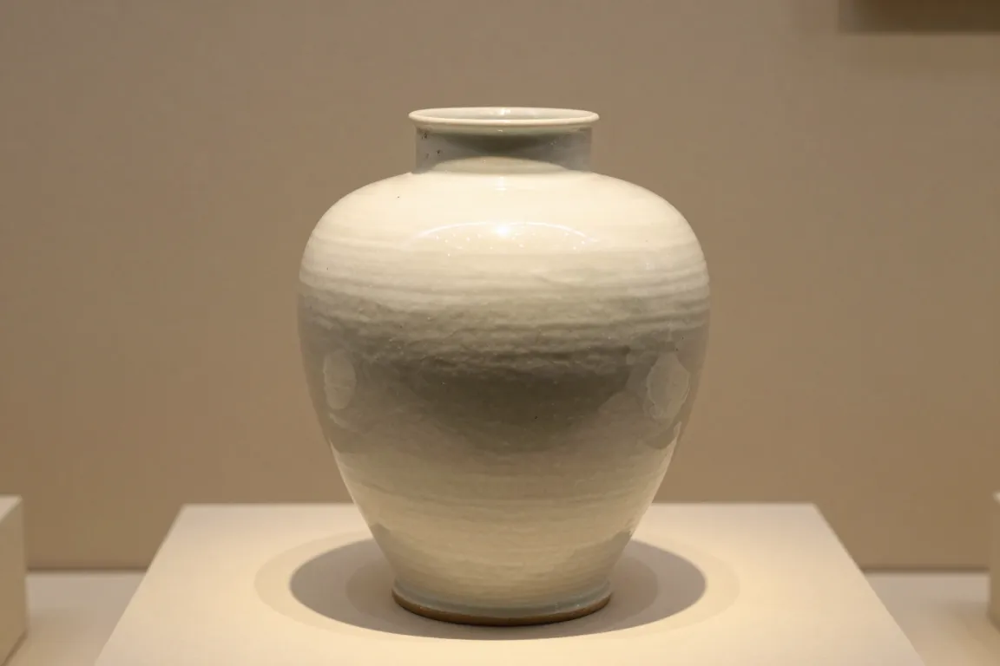

ceramics · 1650–1800 · also: Dalhangari, Korean white porcelain moon jar, Baekja daeho
A large round jar of white porcelain from Joseon Korea. Two bowls are thrown, joined at the waist and glazed milk-white, so the form is full, a little off-round and quite plain.

Core thesis
A form that is round and nearly empty, white and warm, can hold more than a painted jar because it shows the breath of its making.
Design principles
Throw the upper and the lower half as two large bowls and join them at the waist.
Leave the waist join and the slight flat or lean in the shape; it is the mark of the hand.
Cover the whole jar with a clear, soft white glaze, with a faint warm grey-blue cast.
Fire at 1250 to 1300 °C with an even, moderate reduction.
Keep the surface bare of ornament; the colour is a milk-white, not a snow-white.
Give the jar a tall, round form of 40 to 50 cm and a narrow foot ring about half of the belly.
Keep the mouth a plain, short, straight neck without a lip.